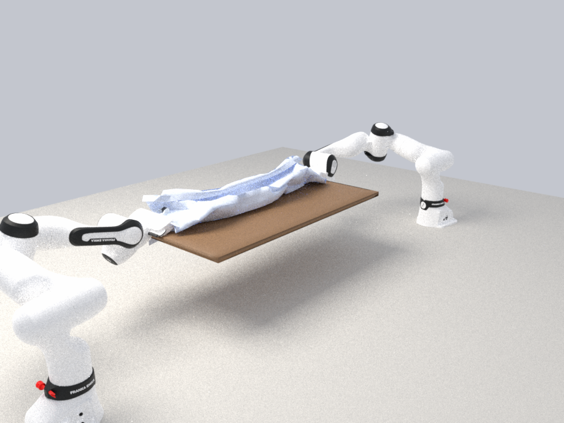
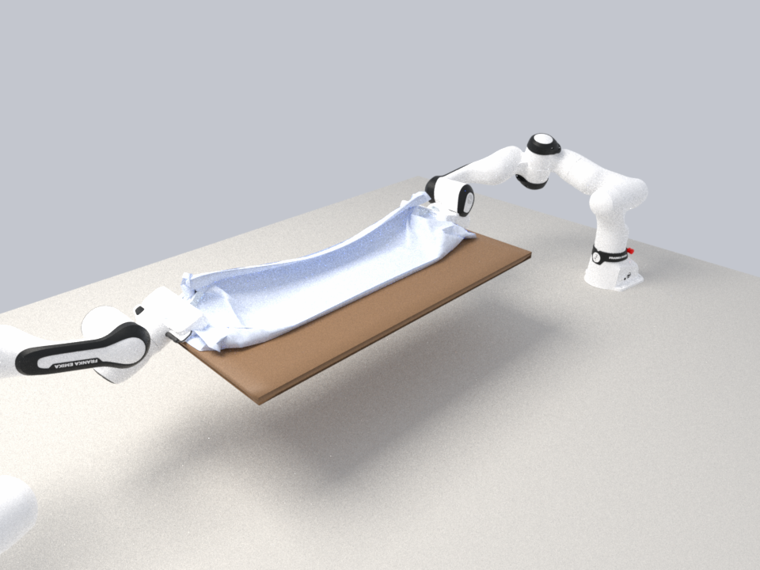
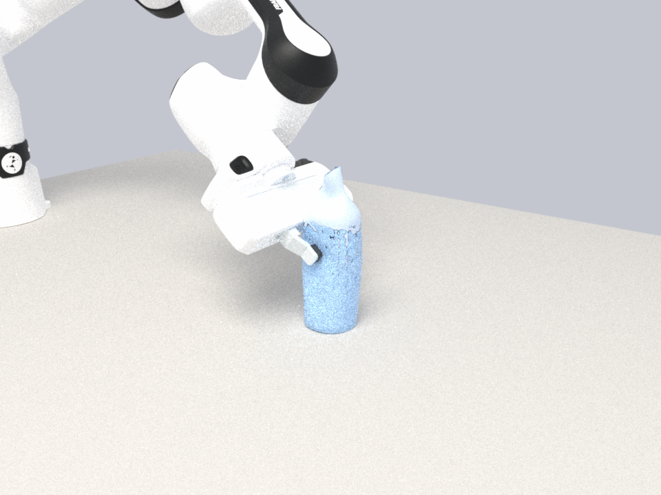
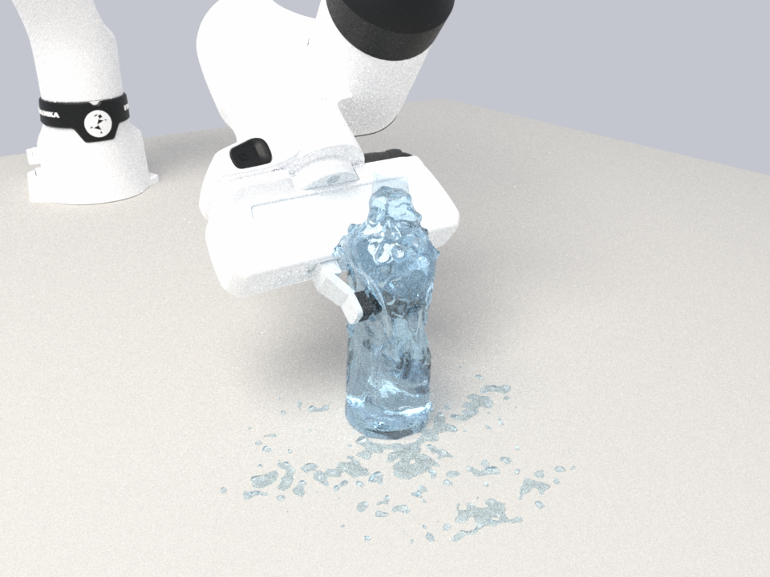
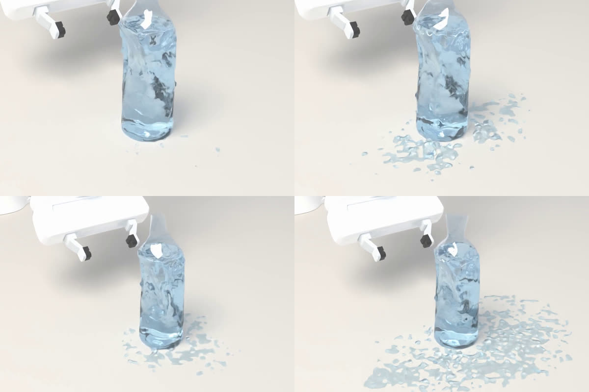
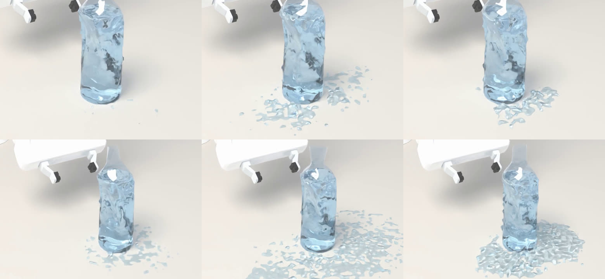

三个操作任务的复现：床单对折、捏瘪水瓶、海绵吸水拧水
robotgym.io 首页用三个任务展示它的物理栈（刚体 MuJoCo、VBD 布料与海绵、PBF 液体）：双臂把床单抬起对折、机械臂捏瘪一只装满水的 PET 瓶、 机械臂把海绵在水碗里浸湿再到杯子上方拧三次。我们用 StiffGIPC 把这三个任务各做了一遍——同一个 IPC 求解器里的布料、薄壳、软体和水， 接触全部是障碍函数 + 连续碰撞检测，不用任何附着约束。这一页记录做法、与原站的差异、数值上踩过的坑，以及每个任务的视频与 USD。
一览
| 任务 | 原站的物理 | 我们的物理 | 需要新增的部分 | 状态 |
|---|---|---|---|---|
| 床单对折（双 FR3） | VBD 布料 + MuJoCo 刚体 | IPC 三角壳布料（拉伸 / 弯曲），URDF 关节驱动的 FR3 ×2，摩擦捏取 | 无 | 已复现 · 松手后不再悬停，近半 100% 叠到远半（棉布刚度） |
| PET 瓶捏瘪 | 0.3 mm 塑料壳 + 屈服，PBF 水 | 0.3 mm IPC 薄壳（PET 模量）+ 二面角铰链塑性，引擎 MPM 水与壳双向耦合 | 壳塑性铰链 | 已复现 · 凹 21.8 mm，松开留 19.3 mm；装 451 ml 捏到 20 mm 溢出约 5 ml，装 467 ml 捏到 18 mm 涌出约 25 ml，落到桌上的水聚成水珠停住 |
| 海绵吸水拧水 | VBD 海绵（实验性）+ PBF 水 | FEM 四面体海绵 + 引擎 MPM 水，多孔耦合（吸入 / 保水 / 挤出） | 多孔耦合 | 已复现 · 三次拧水 16.8 ml；放回盆里重新泡饱、四次拧水 34.8–39.2 ml（原站 33.5 ml） |
| 五个任务 · 触觉版 | — | 每根手指一块 VBTS 凝胶垫（FEM），与场景在同一个 IPC 求解；输出压入深度图、切向位移场、法向力 | 凝胶自身接触开关；MAS 下逐顶点接触力的顺序 | 已完成 · 五个任务 |
| 床与水瓶 · 用公开 wheel 重跑（10-27） | — | 已发布的 Windows wheel（pygipc 0.0.1，RTX 5090）：运动学机械臂 + 碰撞面、四面体瓶壁、MPM 水、床面高度场 | wheel 缺关节驱动、接触力、分对摩擦、运行中开关约束、多孔耦合 | 床：约束抓取折过 97.7 %，床头被带动 19 mm（纯接触捏取会滑脱）· 水瓶：半瓶不洒，满瓶溢出 38–41 ml 海绵没有做 |
| 三个任务 · 换新资产（10-26） | — | 床与毛毯、厨房水槽、方形 PET 瓶（FBX，只做等比缩放）；床上的力控捏取；水瓶和毛毯改用物理尺度的弯曲 | 力控捏取；弯曲尺度开关 GIPC_BEND_PHYS | 三个任务都有结果 · 床：走圆弧、只动床尾那根手指并让手掌顺着被面微倾，床头只被带动 0.7 mm（重跑与换参数的四组都在 1 mm 以内）· 厨房：换位再拧四个周期 48.2 ml（原站 33.5 ml） |
6用公开发布的 pygipc wheel 重跑：床和水瓶10-27
第 5 节的场景用已发布的 Windows wheel（pygipc 0.0.1，cp314，CUDA 13.2 / SM120）在一张 RTX 5090 上又做了一遍，看 wheel 现在能做到哪一步。 床、毛毯、水瓶、机械臂的布置、尺寸和时间线都和第 5 节相同，指标用同一个脚本计算，视频用同一个路径追踪渲染器。 厨房海绵没有做：wheel 里的水只能绕着固体流，没有多孔耦合，吸不进也挤不出。
| 任务 | wheel（RTX 5090） | 第 5 节（开发分支，A800） |
|---|---|---|
| 床 · 圆弧翻折，约束抓取，捏取点往床头挪 | 折过 97.7 %，床头一半被带动 19 mm；16 min | 圆弧、只合拢床尾那根手指、手掌微倾：99.7 %，0.7 mm；118 min |
| 床 · 圆弧翻折，纯接触捏取 | 右手一提起布就滑掉，只折过 43 %（床头 27 mm）；15 min | 圆弧、对称合拢：98.6 %，1.5 cm；128 min |
| 床 · 竖直提起再翻过去，纯接触捏取 | 同样右手滑脱，47 %（床头 60 mm）；16 min | 竖直提起：床头一半被拽过来 8–9 cm |
| 水瓶 · 约 400 ml，快捏到 18 mm | 瓶宽 22.8 mm，挤走 76 ml，不洒，松开后完全回弹；11.6 min | 瓶宽 23.2 mm，挤走 84 ml，不洒（4 ml 冒到瓶口又落回）；24 min |
| 水瓶 · 满瓶（空气约 8 ml），快捏 80 mm/s | 冲出瓶口最多 34 ml，最后 41 ml 在桌上；30 min | 451 ml（空气约 75 ml）捏到 18 mm：快捏 14 ml 冲出瓶口、最后 6.1 ml 在瓶外；慢捏 9 ml、2.3 ml |
| 水瓶 · 满瓶，慢捏 24 mm/s | 冲出瓶口最多 21 ml，最后 38 ml 在桌上；26 min | |
| 水量误差（按静置液面） | 半瓶 4.5 %，满瓶 0.8 % | 4–6 % |
| 厨房海绵 | 没有做 wheel 没有多孔耦合 | 见上文 |
wheel 缺什么，这次怎么绕过去
| wheel 现在的情况 | 影响 | 这次的做法 |
|---|---|---|
| 没有 URDF 导入、关节驱动，读不到接触力 | 机械臂不能按关节驱动；做不了力控按压 | 在 Python 里解 FR3 的正逆运动学，会碰到东西的连杆作为“跟随软约束目标移动的碰撞面”；按压改成按指尖下方的床面高度把手倾斜、定高（指尖离床面 1.5 mm） |
| 只有一个全局摩擦系数 | 指垫和布、布和床的摩擦一样，20 mm 网格的毛毯捏不住 | 毛毯用 15 mm 网格。纯接触捏取时右手一提就滑掉（第一版床面上能捏住，换成下面改正后的床面就滑，原因还没查清），所以床的最好结果用“约束抓取”：合拢后把两指间的 6 个布顶点用软约束跟着手走，到放下时解除 |
| 软约束一经注册就一直生效，布局在初始化时固定 | 不能在运行中“抓住 / 松开” | 抓取和松开时各存一次状态（world.dump），重建带或不带这组约束的场景再 recover，每次 0.3 s |
| 布料弯曲是以平板为静止形状的二次能，强度不等于 E t³/12(1−ν²) | 曲面壳（瓶子）保持不住形状，静置 0.2 s 瓶身就鼓了 1.6 mm；平布要标定 | 悬臂条标定：15 mm 网格实测为名义值的 40.9 倍、20 mm 为 54.7 倍，毛毯按此换算到 5.6×10⁻⁶ N·m。瓶壁改为从原表面向外长出的一层 0.8 mm 四面体（内表面就是原瓶，容积不变），用名义模量：弯曲约偏硬 20 倍、膜约偏软 7 倍，没有塑性，所以松开后完全回弹、不留凹痕 |
| 初始几何有相交就拒绝开始 | 床的碰撞三角面里被罩、床单、床架互相穿插 | 床的碰撞面换成高度场：在原碰撞面上按 5 mm 网格取最高点，再取 ±5 mm 内的最大值，保证把渲染用的原模型整个包住（第一版用 8 mm、不取最大值，侧面和床尾比原模型缩进 3.5–4.7 mm，渲染时毛毯看起来陷进床垫边缘，仿真本身并没有穿透；上表的床结果都是改正后重跑的：毛毯在每一帧都离碰撞面至少 0.49 mm，和渲染用的原模型比没有一处陷进去超过 0.5 mm，渲染时再沿法向抬 1.5 mm 给零厚度的布一点厚度） |
代码：bed_wheel.py、bottle_wheel.py、标定 probe_bend.py、指标 summarize.py（交接包的 handoff_metrics.py）， 渲染前用 to_labrec.py 把 wheel 的录像转成路径追踪渲染器的格式。每次运行的全部参数、偏离项和墙钟在各自的 meta.json 里。
5换成新资产重跑：床与毛毯、厨房水槽、塑料水瓶10-26
三个任务改用一套新模型重做：一张双人床和一条毛毯、一个带双槽水盆的厨房岛台、一只方形矿泉水瓶（FBX，3ds Max 导出）。 原则是只做整体等比缩放，不改模型形状：静止的床和厨房直接用模型自己的三角面做碰撞；会变形的水瓶和毛毯需要仿真网格，网格贴着原表面生成，尺寸、外形不变。
尺寸：以机械臂为参照
| 模型 | 文件里的尺寸 | 判断 | 缩放 | 仿真里的尺寸 |
|---|---|---|---|---|
| 床 | 床架 1.13 × 1.41 m，床面高 0.35 m，床头 0.61 m，枕头宽 0.48 m | 两个枕头、两个靠枕的双人床，各部分比例一致地小了约 30% | × 1.4 | 床架 1.56 × 1.98 m，床面 0.50 m，床头 0.85 m，枕头 0.67 m（标准 1.5 m 床） |
| 毛毯 | 1.90 × 1.20 m 的平板（厚 1 mm） | 本身就是常见的盖毯尺寸；跟床一起放大会变成 2.66 × 1.68 m，两台固定底座的 FR3 够不着任何一种对折 | × 1.0 | 1.90 × 1.20 m，盖住床尾一半 |
| 厨房 | 台面高 0.90 m，柜深 0.60 m，水盆内腔 439 × 318 × 112 mm，龙头高出台面 0.34 m | 已经是真实尺寸 | × 1.0 | 同左（只平移） |
| 塑料水瓶 | 方瓶 44.9 mm（平面到平面）、高 168 mm，瓶口外径 22.1 mm | 没有瓶口小于 26 mm 的 PET 水瓶；放大到标准 28 mm 瓶口（PCO 1881：螺纹 27.4 mm、支撑环 33 mm）后，整瓶正好是常见的 500 ml | × 1.22 | 54.8 mm、204 mm，满口 497 ml |
模型怎么进仿真
- 床：被罩、床单、床架、床腿、床头这些模型自带的三角面（共 24.9 万个）合成一个固定体直接参与碰撞；只把被罩上长于 4 cm、其他部件上长于 0.3 m 的边在原平面内对半切开（形状不变，避免一条长边拖慢碰撞查询）。枕头和靠枕只用于渲染（离毛毯始终 0.5 m 以上）。
- 毛毯：模型是一块 1.90 × 1.20 m、厚 1 mm 的平板，仿真用同样大小的布料网格（20 mm，5856 顶点）。
- 厨房：台面、两只水盆、两个滤网、龙头的原始三角面（4.8 万个）合成一个固定体；柜体只渲染。唯一的新增物是两个水盆排水口下的塞子——模型的盆底有一个 56 mm 的排水孔，要存水就得堵上。
- 水瓶：模型是渲染用网格（边长 0.04–12 mm，大量细长三角形），不能直接当壳计算。我们在它的外表面上按 0.5° × 0.5 mm 采样（瓶颈支撑环处 0.1 mm），重新铺一层 2.5 mm 的壳网格：方形瓶身、五道波浪加强筋、两道环槽、斜肩、瓶颈支撑环、内凹瓶底都在原位置；波浪筋处的网格线沿筋走向弯曲，不出现锯齿。
床：先找到布，再捏出一道褶
毛毯放在床尾这一半，床尾和两侧各垂下 10–15 cm。旧场景里的捏法（张开的两指跨在垂下的布边两侧）在这张床上做不到： 床垫是实心的，垂下的布紧贴着床垫侧面，手指插不到布的后面；再往下是比床垫缩进 4.6 cm 的床架和床腿，手要低到离地 7 cm 才能从床架下面伸进去。 所以改成人叠毯子时最常用的动作：两指竖直落到床面上的毯子上，指尖压住布再合拢，把一道褶挤进两指之间，然后提起、往床头翻过去、放下。
按固定深度压下去行不通：床面不平（靠床尾一侧往下塌），两个指尖一个离布 7 mm、一个已经压进去，合拢时指尖从布面上滑过去（2.5 mm、1.5 mm 两组），压到 1.0 mm 时求解器卡住。 改成力控：手以 5 mm/s 往下走，读两根手指上来自布的竖直接触力，到设定值（2–4 N）就停，合拢时把力保持在设定值的 0.5–2 倍之间。这样两组都捏住了： 合拢时两指间的布顶点从 7 个增加到 13 个，抬起时毯子最高点从 0.49 m 升到 0.69 m。
| 夹持参数 | 毛毯弯曲 | 压力 | 指垫摩擦 | 捏住后提到 | 床尾半边翻到床头半边上 | 床头半边被带动 | 用时 |
|---|---|---|---|---|---|---|---|
| A（上面的视频） | 旧（实际约 1/50） | 4 N | 2.0 | 0.69 m | 100 % | 9.2 cm | 134 min |
| B | 旧 | 2 N | 1.0 | 0.69 m | 100 % | 9.0 cm | 152 min |
| A · 物理弯曲 | 物理 | 4 N | 2.0 | 0.69 m | 99.9 % | 9.0 cm | 141 min |
| A · 物理弯曲 · 15 mm 网格 | 物理 | 4 N | 2.0 | 0.68 m | 99.9 % | 8.0 cm | 143 min |
| B · 物理弯曲 | 物理 | 2 N | 1.0 | 0.69 m（只有一只手） | 49 %（一侧滑脱） | 4.9 cm | 104 min |
| C · 物理弯曲 | 物理 | 2 N | 2.0 | 0.69 m | 100 % | 9.0 cm | 136 min |
| D · 物理弯曲 | 物理 | 4 N | 1.0 | 0.69 m | 99.8 % | 9.1 cm | 135 min |
| A · 物理弯曲 · 圆弧 | 物理 | 4 N | 2.0 | 0.73 m | 98.6 %（床面上 100 %） | 1.5 cm | 128 min |
| A · 物理弯曲 · 圆弧 · 15 mm 网格 | 物理 | 4 N | 2.0 | 0.73 m | 98.6 %（床面上 100 %） | 1.2 cm | 123 min |
| A · 物理弯曲 · 圆弧（原样重跑） | 物理 | 4 N | 2.0 | 0.73 m | 98.7 %（床面上 100 %） | 1.4 cm | 115 min |
| C · 物理弯曲 · 圆弧 | 物理 | 2 N | 2.0 | 0.73 m | 99.2 %（床面上 100 %） | 1.0 cm | 143 min |
| A · 物理弯曲 · 圆弧 · 单指合拢、手掌微倾 | 物理 | 4 N | 2.0 | 0.73 m | 99.7 %（床面上 100 %） | 0.7 mm | 118 min |
| 同上 · 原样重跑 | 物理 | 4 N | 2.0 | 0.73 m | 99.5 %（床面上 100 %） | 0.5 mm | 128 min |
| 同上 · 15 mm 网格 | 物理 | 4 N | 2.0 | 0.73 m | 99.1 %（床面上 100 %） | 0.2 mm | 125 min |
| C · 同上 | 物理 | 2 N | 2.0 | 0.73 m | 99.3 %（床面上 100 %） | 0.1 mm | 115 min |
| D · 同上 | 物理 | 4 N | 1.0 | 0.73 m | 99.2 %（床面上 100 %） | 0.8 mm | 120 min |
| 对照：对称合拢、手掌微倾 | 物理 | 4 N | 2.0 | 0.73 m | 99.0 %（床面上 100 %） | 1.2 cm | 121 min |
A、B 两组结果几乎一样，看起来这个捏法对压力和摩擦不敏感。但这两组的毛毯弯曲沿用上一版床单的取法，因为下面水瓶一节查出的尺度错误，实际只有标称值的约 1/50，毯子软得像一层膜。 换成物理弯曲（板刚度 1.0×10⁻⁵ N·m，抓绒毯的量级）重跑：
- A 组几乎不变：翻过去 99.9 %，床头一半被带动 9.0 cm（15 mm 网格 8.0 cm）。翻过去的毛毯更平整，褶子更大、更圆。
- B 组失败：毯子硬了，被挤进两指间的褶更小，合拢后近处那只手的两指间只有 7 个布顶点（软的时候 13 个）。刚开始提起，布就从这只手里滑掉，只有远处那只手把它那一角翻了过去，叠成一条斜线。所以 2 N、摩擦 1.0 的轻捏其实是临界的。补跑的 C（2 N、摩擦 2.0）和 D（4 N、摩擦 1.0）都捏住了，压力和摩擦两项都偏低时才会滑脱。
床头一半为什么被带动 9 cm。和弯曲无关，是轨迹：手先竖直提到被面上方 0.22 m，这时手离折线 0.39 m，而手和折线之间那段布只有约 0.30 m，布被拉紧，把床头那一半往床尾拽（毯子与被罩之间的摩擦 0.3）。 逐帧看床头一半的位移：毯子落下铺好时 1 mm，两指合拢 14 mm，竖直提起 79 mm，往床头翻过去时回来 6 mm，之后不再变。
改走圆弧。把“提起 + 翻过去”换成一段 6 s 的圆弧：手绕折线转过去，离折线的距离从 0.32 m 缩到最高处的 0.265 m（被面上方 0.26 m），放下时是 0.33 m，始终不超过手和折线之间那段布的长度。其余动作不变。 床头一半只被带动 1.5 cm（原样重跑 1.4 cm，15 mm 网格 1.2 cm，C 组 1.0 cm），几乎全来自两指合拢，翻折时只回来 1 mm。床面上的部分 100 % 翻了过去。表里的 98.6 % 只差在垂到床两侧的布：它们在折痕附近翻不过折线。竖直提起的几组反而显得更高，是因为床头一半被拽过来 9 cm，折痕落在了床头一半的布上。
剩下的 1.5 cm 来自合拢。两指对称合拢时，靠床头的那根手指从 z = −0.21 m 走到 −0.18 m。被面朝床尾方向是斜的（右边 60 mm 指距内低约 3 mm），力控往下压时只有靠床头的指尖压在布上，它往床尾走，就把床头那一半带过去约 14 mm。 先试了合拢时让靠床头的手指不动、只动靠床尾的一根：床头一半不再被带动（0.3–0.5 mm），但右手靠床尾的指尖悬在布上方，挤不出褶，翻折一开始布就滑掉了。 再按落点处被面的坡度，把每只手绕横穿床的水平轴转一个小角度（右 2.7°、左 1.3°），让两根张开的指尖离被面一样高：两只手都挤出了约 19 mm 高的褶（对称合拢时 17–19 mm），一直捏到松手， 床头一半只被带动 0.7 mm，床面上的部分 100 % 翻了过去（全部 99.7 %）。 同参数重跑、15 mm 网格、C（2 N、摩擦 2.0）、D（4 N、摩擦 1.0）四组结果一致：两只手都捏到松手，床头一半被带动 0.1–0.8 mm，其中合拢阶段都在 ±0.1 mm 以内。对照组只把合拢改回对称，手掌同样微倾：合拢时床头一半又被带过去 12.8 mm，最后 1.2 cm，和不倾斜的对称合拢（1.0–1.5 cm）一样。所以拖动来自压着布往床尾走的那根手指，手掌微倾本身并不减少拖动；它的作用是让两根张开的指尖都碰到布，靠床头的手指不动时也能挤出褶。还剩最后一个角：2 N、摩擦 1.0（竖直提起的对称捏法在这里滑脱），正在跑。运行中
USD（机械臂、底座、毛毯逐帧顶点；不含床模型，床是第三方模型）： robotgym_bed_blanket_fold.usdc（A，39 MB）、 robotgym_bed_blanket_fold_phys.usdc（A · 物理弯曲，38 MB）、 robotgym_bed_blanket_fold_arc.usdc（A · 物理弯曲 · 圆弧，39 MB）、 robotgym_bed_blanket_fold_headtilt.usdc（A · 物理弯曲 · 圆弧 · 单指合拢、手掌微倾，39 MB）。 厨房和水瓶的 USD 在确认模型授权之后提供。
水瓶：顺带查出壳弯曲刚度的单位错了
新瓶子先按上一版的设置跑（PET 2.5 GPa、壁厚 0.3 mm、塑性铰链屈服角 0.2 rad），结果每捏一次要几个小时，松手后凹痕几乎原样留着。追下去发现两件事：
- 上一版发布的瓶子用的是二次弯曲模型（日志里的 PrepareQuadBendingQ）。这个模型假设静止形状是平的，而且不含塑性铰链——网页上"凹痕保留来自塑性屈服"的说法是错的。
- 两种弯曲模型的能量都多乘了一条边长。二面角模型写成 k(θ−θ̄)²·|e|，二次模型是 ½k|e|·Σ Qij xi·xj（数值验证 Σ Qij xi·xj = θ²·3|e|²/A，误差 0.02 %）； 标准的离散壳能量是 k(θ−θ̄)²·3|e|²/A，与网格无关。把平面网格贴到半径 R 的圆柱上算一遍：正确的写法每单位面积给出常数 / R²，引擎里的写法给出 ~|e|·常数 / R²—— 等效板刚度只有应有值的 |e|（以米计）倍：2.5–3 mm 的瓶身网格软了约 230–410 倍，15–20 mm 的布料网格软了约 50 倍。瓶壁几乎没有弯曲刚度，表现得像一层膜。
引擎里加了一个开关 GIPC_BEND_PHYS（默认关，旧行为不变）：二面角铰链的权重改为离散壳的 (3/3.7)·|e|²/A， 常数 3.7 是在规则网格上沿不同方向弯曲（2.93–4.46）的平均，方向误差 ±20 %。改后瓶壁的板刚度就是 PET 的 D = E t³ / 12(1−ν²) = 7.1×10⁻³ N·m。
| 无水对照（捏到 20 mm 再松开） | 捏住时凹痕 | 松开后剩余 |
|---|---|---|
| 旧圆瓶 · 二次弯曲（上一版发布的设置，无塑性） | 22.6 mm | 21.9 mm |
| 旧圆瓶 · 二面角 + 屈服 0.2（旧尺度） | 21.5 mm | 20.8 mm |
| 旧圆瓶 · 二面角纯弹性（旧尺度） | 21.6 mm | 21.2 mm |
| 旧圆瓶 · 二面角纯弹性（物理尺度） | 21.2 mm | 20.0 mm |
| 新方瓶 · 二面角 + 屈服 0.2（旧尺度） | 30.7 mm | 22.2 mm |
| 新方瓶 · 二面角 + 屈服 0.2（物理尺度） | 29.6 mm | 4.3 mm |
圆瓶即使在正确刚度、完全弹性的情况下也会留在凹进去的状态：R/t ≈ 107 的薄圆壳被局部捏扁后会翻进一个稳定的内凹位形，就是 PET 瓶被按出"咔"一声的那种凹坑—— 所以上一版的画面本身并不离谱，但原因写错了。方瓶的平板侧壁没有这个双稳态，弯曲刚度对结果起决定作用：物理尺度下松手后弹回，只留下折痕。 另外，物理尺度下的壳条件数好得多：带水的完整捏瓶从几个小时降到 29 分钟（A800）。
带水的捏瓶（物理尺度、PET 0.3 mm）。表里除了标明 24 mm/s 的两组，手指都以夹爪默认的 80 mm/s 合拢，约 0.75 s 捏到底：
| 运行 | 捏住时宽 / 凹 | 挤走的容积 | 水面 | 松开后宽 / 剩余凹痕 | 水 |
|---|---|---|---|---|---|
| 434 ml · 捏到 20 mm · 屈服 0.2 | 25.0 / 29.8 mm | 78 ml | 148 → 180 mm | 47.7 / 7.0 mm | 没有溢出（瓶里还有约 90 ml 空气） |
| 434 ml · 捏到 20 mm · 屈服 0.1 | 25.6 / 29.2 mm | 85 ml | 148 → 185 mm | 37.2 / 17.6 mm | 没有溢出 |
| 432 ml · 捏到 18 mm · 屈服 0.1 | 23.2 / 31.6 mm | 84 ml | 148 → 194 mm | 39.5 / 15.3 mm | 约 4 ml 冲出瓶口又落回瓶里，桌上 0 ml |
| 432 ml · 捏到 18 mm · 屈服 0.1 · 24 mm/s | 23.3 / 31.5 mm | 83 ml | 148 → 194 mm | 39.4 / 15.4 mm | 最多 0.9 ml 冒出瓶口，最后瓶外 1.0 ml |
| 451 ml · 捏到 18 mm · 屈服 0.2 | 23.0 / 31.8 mm | 83 ml | 153 → 瓶口 | 45.0 / 9.8 mm | 最多 14 ml 冒出瓶口，桌上 5.4 ml |
| 451 ml · 捏到 18 mm · 屈服 0.5 | 23.1 / 31.7 mm | 83 ml | 153 → 瓶口 | 55.3 / 0 mm | 最多 14 ml 冒出瓶口，桌上 5.9 ml；松开后完全弹回 |
| 451 ml · 捏到 18 mm · 屈服 0.5 · 24 mm/s | 23.0 / 31.8 mm | 83 ml | 153 → 瓶口 | 55.3 / 0 mm | 最多 9 ml 冒出瓶口，桌上 2.3 ml；松开后完全弹回 |
| 451 ml · 捏到 16 mm · 屈服 0.1 | 21.0 / 33.8 mm | 91 ml | 153 → 瓶口 | 38.2 / 16.6 mm | 最多 17 ml 冲出瓶口，桌上 12.7 ml |
| 451 ml · 捏到 16 mm · 屈服 0.1 · 24 mm/s | 21.1 / 33.7 mm | 91 ml | 153 → 瓶口 | 37.4 / 17.4 mm | 最多 12 ml 冒出瓶口，桌上 9.0 ml |
屈服角是每条铰链的转角，跟网格尺寸有关：PET 的屈服应变约 3 %，在 0.3 mm 壁厚、2.5 mm 网格上对应 θy ≈ 2εyL/t ≈ 0.5 rad；0.1–0.2 rad 相当于在 0.6–1.2 % 应变就开始屈服， 所以视频里的凹痕比真瓶子留得多一点；屈服 0.5 的一组松开后完全弹回。
什么时候会洒。只有挤走的容积超过液面以上的空气，水才会出来。434 ml 静置后水面 148 mm，上面还有约 90 ml 空气（肩部和瓶颈很窄，水面离瓶口还有 5 cm），挤走 78–85 ml，水只被顶进瓶颈；装到 451 ml，水面 153 mm、空气约 75 ml，挤走 83–91 ml，就有 14–17 ml 冲出瓶口、6–13 ml 落到桌上。装水量写的是名义值：我们的水静置后体积会少 4–6 %（451 ml 实际只占 424–431 ml）。之前写这是 5 mm 网格在 55 mm 宽的瓶子里靠壁那一圈处理不好造成的，10-27 换网格复查不支持这个说法：同一只瓶子静置 2.5 s，按水面以下的瓶内容积算，5 mm、4 mm、3.3 mm 网格分别少 4.5 %、3.5 %、4.1 %，并不随网格变细而消失；其中瓶子中部的水本身被压密了 0.8–1.7 %，其余部分的原因还没查清。
捏得快慢的影响。同样的瓶子和水量，只把手指合拢速度从 80 mm/s 降到 24 mm/s（2.5 s 捏到底）： 432 ml 时挤走的容积还没超过空气，快捏约 4 ml 冲出瓶口又落回去，慢捏最多 0.9 ml 冒出瓶口，最后瓶外都只有约 1 ml（瓶里的水面两组都最高到 194 mm，瓶口在 205 mm）； 451 ml 捏到 18 mm 时挤走的容积比空气多约 8 ml，快捏 14 ml 冲出瓶口、最后 6.1 ml 在瓶外，慢捏 9 ml 冒出、最后 2.3 ml 在瓶外；捏到 16 mm（多出约 16 ml）时快捏 17 ml、14.8 ml，慢捏 12 ml、10.9 ml。 所以洒不洒由挤走的容积和瓶里的空气决定，速度决定水冲多高、洒到外面多少。
装满到瓶颈（约 480 ml）没做成。我们的水静置后会少约 6 %，所以试过在瓶口上方再放一柱 60 ml 的水，让它在静置时流进瓶里补满。 结果这柱水落下时约 29 ml 溅到了桌上，瓶里的水面也只升到 167 mm，还没开始捏桌上就有一摊水；而且瓶颈里有水、桌上有水膜时，每步要 100–190 次牛顿迭代，一组要跑十几个小时。这三组都停掉了。
瓶颈支撑环的处理。支撑环是实心的塑料凸缘，单层壳却把它表示成一圈 1.1 mm 高、向瓶内敞开的夹层；捏瓶把水压上瓶颈时，二三十个水粒子钻进这个夹层卡住求解（捏到 18 mm 和装满的两组停在松手阶段）。 所以水会冲到瓶颈的运行（捏到 18 mm 或装满的）在计算时把支撑环压平到瓶颈半径，渲染时再把原模型的支撑环按瓶颈的刚体运动画回去；434 ml 捏到 20 mm 的那组水到不了瓶颈，用的是带支撑环的壳。
厨房：在左边水盆里泡湿海绵，拿到右边水盆上方拧
FR3 装在岛台开放一侧的一个 0.78 m 高的底座上（相当于移动底盘把手臂抬到台面附近；台面 0.90 m，放在地上的 FR3 够不到盆底）。 左盆堵上排水口，放 40–50 mm 深的水（4.5–5.6 L，7–9 万个粒子，粒子间距 4 mm）；海绵（60 × 35 × 100 mm，与上一版相同的多孔耦合和材料）平放在盆底。 机械臂从上方伸进盆里抓住海绵（指头沿盆的 318 mm 方向，204 mm 长的手掌两侧各留 57 mm），泡一秒，提出水面，越过两盆之间的台面，在右盆上方拧三次，再放回左盆。 运动学检查：整条路径上手臂各连杆离台面、盆沿、龙头至少 12.7 mm（最近的是抓取时的指尖离盆底）。
结果（水深 50 mm，海绵 E = 5×10⁴ Pa，三次拧到垫间距 24 / 18 / 12 mm）：泡在水里时引擎在海绵里数到约 240 ml 水；提出水面的 2 s 里约 100 ml 流回左盆，搬到右盆上方时海绵里还有 140 ml。 三次拧完，右盆接到 21.5 ml（依次 11.5、6、4 ml），海绵里一直剩约 120 ml。更软的海绵（E = 2.5×10⁴ Pa，拧到 22 / 16 / 10 mm）基本一样，三次拧完 19.9 ml。
（10-27 更正：之前把 240 ml 写成“海绵连同贴着它的水”。引擎只数落在海绵四面体里的水粒子，每个粒子最多数一次；这个数比孔隙能装的多四到六成（引擎报的饱和度 1.4–1.6）。模型里水粒子可以占满整块海绵，连骨架那 15 % 也算上，饱和度最多也只到 1.18，所以浸没时海绵里的水被挤密了。原因在持水这一步：每步压力求解之后，引擎把海绵里的水粒子拉回到它所在的海绵材料点上（毛细持水），这一步不保体积，流进海绵的水不能再被压力推开。同一场景只跑 1.5 s、海绵泡在水里，改拉回的强度（多孔阻力 × 时间步，默认 200 /s × 5 ms = 1）：强度 1 时饱和度 1.36，0.25 时 1.26，关掉时 1.18，正好是水粒子占满整块海绵、密度与周围的水相同；超过容量后仍按 1/s 拉回的旧门控是 1.80。这一项还没修（关掉拉回，提起时海绵就不再持水）。提出水面后多出来的部分 2 s 内流回左盆，搬运和拧水时的饱和度是 0.75–0.9。）
为什么拧出来的水这么少。FR3 的指垫只有约 20 mm 宽、20 mm 高，只压扁 100 mm 长海绵中间的一条。被挤出的水往下流进下面和两侧没被压的部分，又被多孔模型持住（饱和度低于 1 的单元会把水留住）。 于是试了两种办法。
- 抓低 10 mm（指尖离盆底 2.6 mm，指垫压在海绵下面 19 mm）：三次拧完 23.9 ml（依次 11.9、6.0、4.7 ml，搬回时又滴下 1.3 ml），只比居中抓多 2.4 ml，拧完海绵里还是剩约 120 ml。挤出的水并没有从底面流走。
- 换位再拧：每个周期只拧一次（依次拧到 24 / 18 / 18 / 12 mm），然后搬回左盆放下，沿海绵挪 20 mm 重新抓（−30 / −10 / +10 / +30 mm），泡一秒，再搬过去拧。四个周期右盆接到 48.2 ml（每个周期依次约 13、12、10、13 ml），比原站的 33.5 ml 多。每个周期都相当于“刚泡饱后的第一次拧”：同一位置连拧时第二、三次只出 6、4 ml，重新泡饱再拧又有 10–13 ml。更软的海绵（E = 2.5×10⁴ Pa）四个周期 45.8 ml。用时 16.6 小时（A800）。同一命令换一个水粒子的随机种子，以及“换位 + 抓低”的组合正在跑。运行中
薄海绵（25 mm）没成功。想让指垫盖住更多厚度，结果第二次拧到 18 mm 时，海绵从两指下方被挤了出去，带着自己的 92 ml 水掉进右盆。抓取时指尖停在盆底上方约 8 mm，只夹住了海绵上面的 17 mm。
第一轮的教训。拧过几次后海绵在两指间转了一个角度，100 mm 长的一边垂下来，最低点比指尖低 58 mm。第一轮搬运时海绵底面只比盆沿高 4 cm，垂下的海绵被拖过固定的盆沿和台面，求解卡住； 第二轮把搬运高度提到盆沿上方 10 cm、拧水高度提到 8 cm，就没再卡住。
1床单对折
场景。1.0 × 0.6 m 的床单（三角壳，15 mm 网格，2788 顶点）铺在一块薄板上，前后各悬出 10 cm。两台 FR3 分别从左右两侧沿板边伸进来， 在离布角 4 cm 处把张开的手指跨在垂下的布边两侧，捏住、抬起、越过板面，把布边竖直放到对面，松开、竖直抬手、退开——床单被对折。全程只有接触与摩擦，没有把布“粘”在手指上的约束。
做法。手指是 URDF 里的标准 Franka 手指（棱柱关节位置驱动），布料是 IPC 三角壳：膜模量 105 Pa、弯曲模量 3×104 Pa（厚 1 mm，弯曲刚度 1.6×10−6 N·m，接近棉布）（10-26 更正：引擎的弯曲能量多乘了一条边长，15 mm 网格上实际的弯曲刚度约为这里标称值的 1/50，见第 5 节），面密度 0.2 kg/m²。 逆运动学在 CPU 上逐帧求解（阻尼最小二乘，全程位置误差 0.2 mm），关节目标交给引擎的转动关节驱动。捏取用 2 mm 的障碍距离、1 mm 的指垫间隙（每侧 d̂/4）， 捏住后先把布边向外拉到手掌完全离开薄板的投影，再竖直抬起、越过薄板放到对面。
与原站的差异。原站是 VBD 布料，捏取靠的是同一类接触。我们的床单网格更粗（15 mm），时间步 5 ms；对折的轨迹是手写的分段最小加加速度轨迹，不是学出来的策略。
| 阶段 | 时间 (s) | 指垫间隙 (mm) | 布边最高点 (m) | 布边到指尖 (mm) |
|---|---|---|---|---|
| 捏住 | 7.0 | 1.0 | 0.305 | 7.2 |
| 外拉 | 9.0 | 1.0 | 0.305 | 7.2 |
| 抬起 | 12.0 | 1.0 | 0.469 | 7.2 |
| 放下 | 16.0 | 1.0 | 0.418 | 7.2 |
| 开爪 | 18.0 | 1.0 | 0.380 | 7.2 |
| 松开 1 s 后（手未动） | 19.0 | 60.0 | 0.375 | 19–49 |
| 抬手后 | 20.5 | 60.0 | 0.353 | 105–116 |
| 结束 | 24.0 | 60.0 | 0.353 | 147–149 |
"布边到指尖"是布料顶点到指尖中心的最小距离：捏住期间一直是 7 mm（15 mm 的网格里就是"布在指垫之间"）。布边是被放到下层上的，不是从空中丢下：开爪后靠在张开的手指上的一小段布角， 在手抬起时倒下；结束时"布边最高点"0.353 m 就是这两处起皱的布角（高出板面约 5 cm，已经静止）。USD（刚体变换 + 布料顶点，601 帧，20 MB）：bedsheet_fold.usdc
2捏瘪水瓶
场景。一只 PET 瓶（半径 32 mm、高 200 mm、壁厚 0.3 mm，旋转体网格 3 mm 边长，4300 顶点）立在桌上，装水 451 ml（2.9 万粒子，静置后水面 137 mm，肩部以下只剩约 40 ml 空气）。 FR3 从侧面伸过来，两指在瓶身中部（离桌面 9.5 cm）以 80 mm/s 合拢到 20 mm（约 0.75 s 捏到底），保持约 3 s，再张开退回。全程 15 s，时间步 5 ms。 另有一版快捏：装水 467 ml、合到 18 mm，看水从瓶口喷出来（见下）。（10-26 更正：页面里的“慢捏”“快捏”只是两组运行的名字。之前写的“2.5 s 合拢 / 0.8 s 合拢”不对：脚本里的 2.5 s 和 0.8 s 只是动作段的时长，手指一直以夹爪默认的 80 mm/s 合拢，两组都在约 0.75 s 内捏到底。两组的区别是装水量（451 / 467 ml）和捏合深度（20 / 18 mm），不是捏的速度；触觉版同理。）
做法。瓶壁是零厚度的 IPC 三角壳，膜刚度按 PET 取（E = 2.5 GPa、t = 0.3 mm），弯曲用二面角铰链模型（D = E t³ / 12(1−ν²)）。（10-26 更正：本节与 2b、触觉版的瓶子实际跑在二次弯曲模型上——日志里是 PrepareQuadBendingQ——那个模型不含塑性铰链；凹痕留下来是薄圆壳被捏扁后翻进的稳定内凹位形（弹性双稳态），不是塑性屈服。另外两种弯曲模型的刚度都偏软约 |e| 倍，见第 5 节） 为了让凹痕留下来，我们给铰链加了一个塑性角：每条边记一个永久偏转角 θp，弯曲能用 θ − θrest − θp； 每步结束后，超过屈服角 0.2 rad 的部分全部变成永久的（比例 1.0）。瓶里的水是引擎内的 MPM Lite 水，粒子是 IPC 接触点，壳推水、水顶壳在同一次 Newton 里完成； 水的壁面场约束、幽灵罚项和静止拖曳（液体页第十、十一步）全程开着——这一轮曾因扫描脚本漏掉这组开关而让水柱压实、穿过瓶底，见下文"改进轮次"。桌面在水的网格里也是一道墙（壁面场约束扩展到解析地平面），贴着桌面、不到一格厚的水层保留粒子之间的推开，另加水对桌面 1.0 的摩擦：落到桌上的水 1 s 内停住，之后不会被压扁成一层、在画面里“蒸发”（见改进轮次 10-21）。表面张力用引擎新加的隐式内聚（液体页第二十一步）：表面粒子之间的内聚能放进同一次 Newton，水珠落到桌上保持成珠，不再摊成看不见的薄层（γ 取水的 0.072 N/m）。
与原站的差异。原站的壳用的是“真实刚度与屈服”，液体是 PBF；我们的屈服是铰链级的（弯曲塑性），膜本身保持弹性，PET 的膜屈服没有建模。 瓶子是开口的，水不会密封加压；捏合深度由夹爪目标间隙决定。
| 阶段 | 时间 (s) | 指间距 (mm) | 瓶身最小半径 (mm) | 凹痕 (mm) | 水面高度 (mm) | 桌上的水 (ml) |
|---|---|---|---|---|---|---|
| 静置 | 1.0 | 78 | 31.9 | 0.1 | 136 | 0 |
| 捏合到位 | 7.0 | 20 | 10.2 | 21.8 | 176 | 0.1 |
| 保持 | 9.0 | 20 | 10.2 | 21.8 | 164 | 4.1 |
| 松开 | 11.0 | 78 | 12.7 | 19.3 | 145 | 4.8 |
| 结束 | 15.0 | 78 | 12.7 | 19.3 | 142 | 5.3 |
凹痕按瓶身中部一圈顶点到该圈中心的最小距离算（静止半径 32 mm）；"桌上的水"按离桌面 15 mm 以内、离瓶轴 34 mm 以外的粒子计（每粒 0.0156 ml）。 挤出的水比按截面积估的少得多：有水顶着时瓶身不再凹成深坑，而是整体压成椭圆（最大半径 42 mm），净排开体积只有几十 ml，先填掉 40 ml 空气，剩下的才溢出——真实的瓶子也是这样。 溢出约 5 ml（不加表面张力时约 10 ml）：表面张力让瓶口冒出的水保持成团，松开时有一部分退回瓶里。一次完整运行在一张 A800 上用时 113 分钟（3000 步）。USD 见文末下载。
快捏（装到 467 ml）：水从瓶口冲出来
同一只 3 mm 壳的瓶子装到 467 ml（肩部以下只剩约 25 ml 空气），两指同样以 80 mm/s 合到 18 mm。水面先冲进瓶颈，随后约 0.6 s 内有 20 多毫升从瓶口涌出（瓶口上方最多约 31 ml）， 最高到瓶口上方 3.4 cm、横向散开 3.3 cm，落回桌面后聚成一圈水珠和小水洼、1 s 内停住；结束时桌上共 25 ml（慢捏 5 ml）。瓶身凹 22.8 mm，松开后留 19.4 mm。 瓶颈有 25 mm 宽、净排开的体积只有几十 ml，所以是一股短促的涌出而不是细高的水柱；要喷得更高需要更小的瓶口或更深的捏合。
3海绵吸水拧水
场景。一块 6 × 3.5 × 10 cm 的开孔海绵（FEM 四面体 720 个，E = 50 kPa，ν = 0.35，密度 120 kg/m³，孔隙率 0.85）泡在 28 × 14 cm、水深 5.5 cm 的水盆里；FR3 自上而下、手指沿盆的长边抓住它（指垫合到 44 mm，海绵压扁 27 %），泡 2 s 后提出水面（多余的水滴回盆里），移到杯子上方，分三次把手指合到 24 / 18 / 12 mm 拧水，每次保持 2 s，再放回盆里。判据和原站一样：杯子里收到多少水。
做法。海绵本身是普通软体（stable neo-Hookean 四面体；泊松比取 0.35 而不是泡沫「应有」的 0.1，原因见下文「坑」——这套能量在低泊松比下会被捏到塌缩）；关键是水与海绵的多孔耦合（引擎新增 set_liquid_porous）：取消海绵表面与水粒子的接触，水可以自由进入海绵区域（吸水）；每步先在海绵的四面体里定位粒子（重心坐标），求解前把它们的速度向海绵材料速度松弛（达西式阻力）并抵消重力，求解后再把它们拉回各自的物质点——这三件事都乘一个保水系数 f(s)：饱和度 s ≤ 1 时 f = 1（水完全锁在物质点上，跟着海绵走），s ≥ 1.25 时 f = 0（多余的水完全放开，重力和 MPM 压力把它从开放的表面压出去），中间线性过渡。饱和度 s = 海绵内水体积 / 孔容量，按顶点聚合（一个四面体在 8 mm 水下只装半个粒子，按四面体算会级联漏水；按全局算又看不见局部挤压）。孔容量不能简单取「孔隙率 × 当前体积」：ν = 0.35 的 FEM 被指垫捏扁时主要是向两边鼓，体积掉得很少（60 → 24 mm 时指垫下方的四面体只少 25 % 体积，s 停在 1.0，什么都挤不出来），所以按开孔泡沫算：骨架体积 (1 − φ)V₀ 不变，孔容量 = V₀ · max(0.02, min(J, λmin) − (1 − φ))，λmin 取四面体最短棱的伸长比——单轴捏扁时孔跟着塌掉。网格级的壁面约束对海绵表面不生效，其余器皿照常。
与原站的差异。原站的海绵是 VBD（实验性），吸排水机制未公开；我们的模型是三个显式规则（自由进入、随材料运动、按饱和度保水 / 放水），没有真实的毛细压力曲线和达西渗透率。几个中途被实验推翻的版本也值得记一笔：按单个四面体算饱和度在 8 mm 的水粒子下会级联漏水（抬起时漏掉 110 ml）；只在求解前设速度则水跟不上海绵（上升速度只有海绵的一半，然后全部掉回盆里）；把达西阻力从 200 /s 降到 60 / 30 /s 想让多余的水流得快些，结果抬起时所有水都漏回盆里——同一个阻力也是保水的机制，放水只能靠按饱和度切换的系数，而不是调阻力。
海绵含水量与杯中水量随时间（录制里按粒子计数，每个水粒子 0.064 ml）：
| t (s) | 阶段 | 指垫间距 (mm) | 海绵含水 (ml) | 杯中 (ml) |
|---|---|---|---|---|
| 7.5 | 提出水面 | 44 | 235 | 0 |
| 9.5 | 到杯子上方 | 44 | 134 | 0 |
| 14.5 | 拧 1 到位 | 24 | 126 | 8.1 |
| 16.5 | 松开 1 | 44 | 124 | 9.2 |
| 20.5 | 拧 2 到位 | 18 | 124 | 9.9 |
| 22.5 | 松开 2 | 44 | 122 | 12.1 |
| 26.5 | 拧 3 到位 | 12 | 121 | 12.5 |
| 28.5 | 松开 3 | 44 | 117 | 16.5 |
| 38.0 | 放回盆里后 | 78 | 246 | 16.8 |
一次完整运行（39 s，7800 步，2.4 万个水粒子）在一张 A800 上用时 150 分钟。USD 见文末下载。
换位再拧：四个周期 34.8 ml；四次都捏中间反而更多（39.2 ml）
上一轮查明每次拧出 5–9 ml 的上限来自 20 mm 指垫只压到 100 mm 海绵的 1/5。这一轮给脚本加了 --regrasp：每拧一次就把海绵放回盆里重新泡饱，再沿长边换一段捏起来拧，四次分别拧到 24 / 18 / 18 / 12 mm。
上一版的第四周期是失败的（10-21 凌晨复查）。按录制里海绵的实际位置复算每次抓在哪：第一次抓取落在海绵中心（首抓没有加偏移），抬起时手却按偏移平移了 36 mm， 放回后海绵整体偏了 34 mm；之后每次都按"海绵还在原位"去抓，实际抓在离中心 +2、+27、+51 mm 处。海绵半长 50 mm，第四次的指垫正好落在海绵末端， 拧水一开始海绵就从指尖滑出、掉到桌上，多出的 1.3 ml 是掉落时滴的水。据此写的"12 mm 深捏帮助不大""多一个周期比捏得更深更有用"已撤回。
修正：闭环换位。每次重新抓取前读出海绵的实际中心，把这一周期的移动、下探、抓取、浸泡和抬起位姿一起平移；第一次抓取就带上偏移；搬到杯子上方时让海绵中心对准杯心。 重跑了两组：换位组抓 −30 / −10 / +10 / +30 mm 四段，对照组四次都捏中间同一段。每次重新瞄准的修正量都在 1 mm 以内，实际抓取段与计划相差不到 2 mm； 两组的四个周期海绵都没有滑出——换位组第四次捏在离中心 31 mm 处、拧到 12 mm 时，海绵长的一侧下垂，中心相对指尖下沉约 1.6 cm，但一直在指间，松开后落回盆里。
| 周期 | 拧到 (mm) | 换位组：实际抓取段 (mm) | 换位组：本次收到 (ml) | 换位组：杯中 (ml) | 对照组（都捏中间）：本次收到 (ml) | 对照组：杯中 (ml) |
|---|---|---|---|---|---|---|
| 1 | 24 | −31 | 9.2 | 9.2 | 11.9 | 11.9 |
| 2 | 18 | −10 | 10.8 | 20.0 | 9.5 | 21.4 |
| 3 | 18 | +10 | 8.2 | 28.2 | 7.7 | 29.1 |
| 4 | 12 | +31 | 6.6 | 34.8 | 10.1 | 39.2 |
结论。(1) 每个周期的增量主要来自放回盆里重新泡饱：四次都捏同一段，第二到第四次仍各收到 8–10 ml。(2) 换到没捏过的一段并没有多拧出水，捏在海绵中间更好： 靠近末端时海绵另一侧悬得更长、往下垂，指垫压到的含水部分更少（第四周期 6.6 ml，对照组 10.1 ml）。两组都超过原站的 33.5 ml。 全程 94.5 s（18 900 步），一张 A800 上换位组 664 分钟、对照组 536 分钟。换位组的 USD 见文末下载。
10-22 / 10-23 补充：加密网格后这个排序不成立。触觉版把海绵加密到 6.25 mm（1309 个顶点）后，不带垫子各跑三个播种种子：换位 30.3–32.2 ml、都捏中间 28.9–30.7 ml，同一种子下换位略多 0.6–1.5 ml，但同一条命令换一张卡就能差 2.8 ml；带垫子换位 28.4 / 29.3 ml、都捏中间 31.7 ml。两种抓法相差在几毫升以内，加密网格的所有运行也都低于原站的 33.5 ml，见触觉版的换位再拧。上面的结论 (2) 和“两组都超过原站”只是这两次粗网格（12.5 mm）运行的结果。
4带触觉的版本：手指内侧换上凝胶触觉垫10-21
同样五个任务再各跑一遍，这次 FR3 每根手指的内侧多一块视触觉（VBTS）凝胶垫：15.9 × 14.0 × 2.5 mm 的四面体 FEM 凝胶（E = 0.5 MPa，ν = 0.4）， 背面钉在指面上，和布、瓶壳、海绵、水在同一个 IPC 求解里接触。垫子被压进去多深、表面被往哪边拖，都是求解出来的凝胶变形，不是事后从几何里估算的； 凝胶本身的软度也反过来作用在被抓的物体上。传感器模型和实验台触觉演示是同一套，每块垫子每帧给出三样读数：
- 压入深度图（视频右侧的颜色）：凝胶背后一台正交深度相机，200 × 176 像素、0.079 mm/像素，看接触面相对静止形状被压进去多少（Depth）；
- 切向位移场（箭头）：接触面上每一点沿表面方向被拖动了多少，相当于凝胶表面标记点的位移，能看出剪切的方向和大小（Mesh3DFlow 的切向分量）；
- 法向力（下方曲线）：作用在凝胶上的接触力沿垫子法向的合力。
为了让抓取几何和原版一致，手指的合拢目标整体后退一个垫子厚度（每侧 2.5 mm），垫面之间的间隙等于原版指面之间的间隙；其余设置（材料、时间步、轨迹、液体参数）与原版相同。 下表是夹持阶段的读数和任务结果；切向位移相对第一帧，箭头按图中标注的倍数放大。
| 任务（触觉版） | 夹持时每块垫子的法向力 | 最大压入 | 最大切向位移 | 任务结果（对照原版） |
|---|---|---|---|---|
| 床单对折 · 触觉版 | 5.7–6.5 N（四块） | 0.28–0.42 mm | 0.20–0.32 mm | 布边提到 0.465 m，近半 100% 叠到远半（原版 0.43–0.47 m、100%）；深度图受布料网格分辨率限制，见下文 |
| 捏瘪水瓶 · 慢捏 · 触觉版 | 左 27.9 N · 右 29.7 N | 1.43 / 1.31 mm | 1.44 / 1.78 mm | 瓶身凹 21.6 mm、松开留 18.9 mm（原版 21.8 / 19.3）；约 2 ml 冒到瓶口上方 1.4 cm 后退回瓶里，没有落到桌上（原版约 5 ml 溢出） |
| 捏瘪水瓶 · 快捏 · 触觉版 | 左 35.6 N · 右 35.0 N | 1.37 / 1.44 mm | 1.69 / 2.43 mm | 瓶身凹 22.1 mm、松开留 18.8 mm（原版 22.8 / 19.4）；冒出瓶口的水峰值 15 ml、最后桌上 9 ml，约为原版（31 / 21 ml）的一半，见下文 |
| 海绵三次拧水 · 触觉版 | 搬运 15.5 N · 拧水峰值 20.4 / 20.5 N | 1.55 / 1.80 mm | 1.05 / 1.14 mm | 杯中 20.2 ml（复跑 19.3 ml；同网格不带垫子的对照 19.3 ml，原版粗网格 16.8 ml）；松开后海绵不再往下掉 |
| 海绵换位再拧 · 触觉版 | 搬运 8.1–8.6 N · 拧水峰值 11.3–14.0 N | 1.81–1.88 / 1.92 mm | 1.54–1.56 / 1.02–1.03 mm | 四个周期杯中 28.4 / 29.3 ml（两次）；同网格不带垫子 29.4–32.2 ml（四次）；都捏中间带垫子 31.7 ml、不带 28.9–30.7 ml（三个种子）；原版粗网格 34.8 / 39.2 ml，见下文 |
床单对折 · 触觉版
两台 FR3 各用两块垫子在离布角 4 cm 处捏住下垂的布边：6.24 s 合拢，每块垫子 6.3–6.5 N；拉出、抬起、翻过去、放下的整个过程中四块垫子都稳定在 5.7–6.2 N，从捏住到抬到最高（7–12 s）垫子之间始终是同一组布料顶点，没有打滑；18 s 松手后读数回零。布边被提到 0.465 m，近半 100% 叠到远半，与原版相同。
压入深度图在这里要打个折扣看：床单是 15 mm 的三角网格，每块垫子（16 × 14 mm）底下只有两个布料顶点，图里最深的点正好落在这两个顶点上（逐一核对过），斜向的明暗带是三角形的棱——它反映的是布料的离散化，而不是织物本身；法向力才是这个分辨率下可信的读数。我们把夹持区的布加密到 3.75 mm 试过一次：图像变得均匀（93% 的像素超过峰值的一半，15 mm 网格只有 1–8%），但那块布角的下垂形状也跟着变了，一只手捏空、另一只手的力升到 104 N，原因还没查清，所以这里交付的仍是 15 mm 的版本。
捏瘪水瓶 · 慢捏 · 触觉版
两指在 6.2 s 碰到瓶身，合拢到 20 mm 时每块垫子 32.6 N，随后回落，保持阶段稳定在 28–30 N。压入集中在每块垫子的边缘一带（深度图里的亮带），最深 1.3–1.4 mm，不是整块均匀压下；凝胶表面的切向位移最大 1.4–1.8 mm。松开后 0.1 s 内读数回零。瓶子被挤掉的容积是 101 ml，比原版（105 ml）少 4 ml，原版落到桌上的大约也就是这么多，所以这一版的水只冒到瓶口上方又退了回去——机理和快捏相同，见下一小节。
捏瘪水瓶 · 快捏 · 触觉版
两指以 80 mm/s 合到 18 mm：6.2 s 碰到瓶身，6.76 s 每块垫子 38 N（慢捏 33 N），保持阶段稳定在 35–36 N；压入最深 1.4 mm，凝胶表面的切向位移最大 2.4 mm（慢捏 1.8 mm）。水照样从瓶口涌出、落到桌上聚成水珠，但量约为原版的一半（冒出瓶口的峰值 15 ml、最后桌上 9 ml；原版 31 / 21 ml）。
原因用对照组查清了：同样的手指指令，瓶子被挤掉的容积是 105 ml，原版 118 ml。把合拢目标加深到 16.6 / 16.0 mm 再跑两次，16.0 mm 时瓶身凹深已和原版相同（22.9 / 22.8 mm），凹陷的速度也相同，挤掉的容积却仍只有 110 ml——凹得一样深，但垫子压出的凹陷更窄。四次运行里，落到桌上的水和挤掉的容积呈线性关系：每多挤掉 1 ml，桌上多 0.94 ml，挤掉约 95 ml 以下就不会溢出（拟合 r = 0.998，残差都在 0.3 ml 以内）。溢出量是两个大体积之差，所以挤掉的容积少 7–10 %，溢出就少三分之一到一半；本页的触觉版保留与原版相同的手指指令。
海绵三次拧水 · 触觉版
10-22 更正：上一版本节的数字（搬运约 23 N、拧水最高 61 N、每次松开海绵往下掉 2 / 9 / 22 mm）作废。它们来自两处问题：一是旧引擎里 2.5 mm 厚的凝胶自己的面落进了海绵场景 1 mm 的障碍区，凝胶被额外撑硬，内部的接触力也混进了读数（见上方说明 (1)）；二是海绵用的 12.5 mm 四面体太粗。现在的数字用修正后的引擎，海绵加密到 6.25 mm（1309 个顶点、5760 个四面体）；同样的命令在 A800 和 4090 上各跑一次，数字给两次的范围，另跑一组同网格、不带垫子的对照。
手指在 4.5 s 夹住海绵，接触前读数为 0；泡水时每块垫子 16.2 N，提出水面、搬到杯子上方时 15.5 N。三次拧水（垫面间隙 24 / 18 / 12 mm，三次都夹到了位）后，杯中最终 19.3–20.2 ml，三次分别拧出 11.3–11.6 / 2.7–3.5 / 4.5–4.7 ml；不带垫子的对照是 19.3 ml（11.7 / 2.8 / 3.8 ml），差别在两次运行之间的出入以内。原版（12.5 mm 网格、不带垫子）是 16.8 ml（9.3 / 2.8 / 4.4 ml），多出的约 2.5 ml 来自网格加密，与垫子无关。
海绵也不再往下掉：同样跟踪垫子中心底下那几个海绵顶点，两次运行里三次松开后都回到搬运时高度的 0.4 mm 以内，和对照组相同。修正后的引擎在粗网格上仍会掉（换位再拧的第一次松开时 6 mm），所以上一版的下掉主要来自粗网格。凝胶表面的平均切向位移在三次保持时是 0.10 / 0.17 / 0.26 mm，每次松开都回到 0.05 mm：这是被挤开的海绵带动的弹性剪切，不是打滑。压入最深 1.8 mm，切向位移最大 1.1–1.3 mm。
每次拧水，垫子的力曲线都是双峰：合拢经过约 30 mm 时到 20.3–20.5 N，夹到底反而降到 18.3–18.5 / 16.7–16.8 / 16.1–16.8 N，松开再经过 30 mm 时又回到约 20.4 N。手指并没有到驱动力的上限。我们在不带水的同一场景里，把每根手指沿垫子法向受的力拆成凝胶垫和手指本体两部分：每根手指受的总力随间隙缩小一直增大（44 mm 时 15.7 N，30 mm 时 30 N，18 mm 时 35.5 N，12 mm 时 40 N）；但间隙小于约 30 mm 以后，软海绵绕过只凸出 2.5 mm 的凝胶垫，把手指本体也包了进去，多出来的力由手指本体承担：三次保持时手指本体分别占 44 % / 53 % / 59 %。深度图里压入集中在垫子的边缘和四角，和海绵从四周包上来的情形一致。不带水时垫子的读数与带水时相同（峰值 20.0–20.5 N，保持 18.3 / 16.8 / 16.5 N），与水无关。所以挤得深时，垫子读到的只是夹持力的一部分。
海绵换位再拧 · 触觉版
流程和换位再拧一节相同：每拧一次就把海绵放回盆里泡饱，沿长边换一段（−30 / −10 / +10 / +30 mm）重新捏起，四次分别拧到 24 / 18 / 18 / 12 mm；对照组四次都捏中间。海绵和三次拧水的触觉版一样加密到 6.25 mm，杨氏模量沿用原版换位再拧的 25 kPa（三次拧水是 50 kPa），同样的夹持间隙下，垫子的读数只有上一节的五到七成。两组都直接用修正后的引擎跑，另各跑一次同网格、不带垫子的对照。
手指在 5.1 s 碰到海绵，接触前读数为 0；泡水时每块垫子 8.7–9.2 N，搬运时 8.1–8.6 N，四次重新抓取都一样。拧水时的力曲线和三次拧水一样是双峰：合拢途中和松开途中各到一次 11–14 N，夹到底时反而回落到 8.4–12.7 N。第四次抓在离中心 30 mm、靠近海绵末端的地方，拧得最深（12 mm），保持时却只有 8.4–8.7 N，比前两次（18 mm，11.4–12.7 N）还低；四次都捏中间的对照组第四次是 9.6 N。前三次松开后，垫子底下的海绵顶点都回到搬运时高度的 0.3 mm 以内；第四次海绵长的一侧下垂，左垫底下的顶点保持时低 2.5 mm、松开后仍低 2.1–2.2 mm（不带垫子是 1.8 / 1.1 mm），左垫的切向位移也在这时最大（1.5–1.6 mm）。海绵始终没有滑出。压入最深 1.8–1.9 mm。以上换位组的读数是两次运行（A800 和 4090 上同一条命令）的范围，两次的力相差不超过 0.3 N。下表是每个周期杯里收到的水：
| 周期 | 拧到 (mm) | 换位 · 带垫子 (ml) | 换位 · 带垫子 · 复跑 (ml) | 换位 · 不带垫子 (ml) | 都捏中间 · 带垫子 (ml) | 都捏中间 · 不带垫子 (ml) |
|---|---|---|---|---|---|---|
| 1 | 24 | 10.3 | 10.0 | 10.6 | 12.5 | 11.1 |
| 2 | 18 | 7.4 | 7.3 | 9.9 | 8.2 | 7.8 |
| 3 | 18 | 4.8 | 5.4 | 5.2 | 5.0 | 5.5 |
| 4 | 12 | 5.9 | 6.6 | 6.5 | 6.0 | 6.3 |
| 杯中合计 | 28.4 | 29.3 | 32.2 | 31.7 | 30.7 |
更正（10-23）：带垫子是否少收水，分不清。上一版写“带垫子的换位组少了 2.9–3.8 ml、主要在第二周期，不是偶然出入”，这个判断下早了。同一条不带垫子的命令在 4090 上复跑，四个周期是 11.1 / 6.8 / 6.6 / 4.9 ml、共 29.4 ml，比 A800 上的 32.2 ml 少 2.8 ml，第二周期就差 3.1 ml；再加两个播种种子（只改水的初始抖动），不带垫子的四次总量是 29.4–32.2 ml，第二周期 6.3–9.9 ml。带垫子的两次 28.4 / 29.3 ml、第二周期 7.3–7.4 ml，都在或紧贴这个范围；在 4090 上带垫子和不带垫子几乎一样（29.3 对 29.4 ml）。平均下来带垫子少约 2 ml，和运行之间的出入同量级。
| 不带垫子 | 种子 0 · A800 | 种子 0 · 4090 | 种子 1 | 种子 2 |
|---|---|---|---|---|
| 换位：杯中合计（第二周期） | 32.2（9.9） | 29.4（6.8） | 30.7（8.3） | 30.3（6.3） |
| 都捏中间：杯中合计（第二周期） | 30.7（7.8） | — | 30.1（6.1） | 28.9（6.4） |
换位还是捏中间，加密网格后分不出明显好坏。不带垫子的三个播种种子（都在 A800 上）里，换位都比都捏中间略多（+1.5 / +0.6 / +1.4 ml），但这比同一条命令换一张卡的出入（2.8 ml）还小；带垫子只有一个种子，是都捏中间多 2.4–3.3 ml；粗网格上是都捏中间多 4.4 ml（39.2 对 34.8）。所以原版一节“捏在海绵中间更好”的结论在加密网格上不成立，两种抓法收到的水相差在几毫升以内。加密网格的所有运行（28.4–32.2 ml）都低于粗网格的两组和原站的 33.5 ml：三次拧水加密网格后多了约 2.5 ml，这里反而少了 2.6–10.3 ml。
改进轮次（10-20）：网格加密、更深的捏合、水的表面渲染10-20
起因。上一轮交付后复查：床单（25 mm 网格、膜 3×105 / 弯曲 3×104）对折时满是单元尺度的碎褶；水瓶只凹 15.8 mm、镜头被夹爪挡住、 水画成一根不透明的蓝色颗粒柱。这一轮在八卡 A800 节点上并行扫描床单与水瓶的参数，同时把渲染链路换成和滴管演示一样的水面重建。
环境。八卡节点重建：conda 环境按保存的 yml 重建，引擎用本机编译的 sm_80 二进制（附带 urdfdom 3.0 / tinyxml 库），1 s 烧瓶静水的数字与本机逐位一致后才开始扫描；每卡一个运行，床单 24–38 分钟、水瓶约 1 小时。
床单：网格 10 mm、膜 105 / 弯曲 105
| 方案 | 网格 | 膜 / 弯曲 (Pa) | dt | 捏取（布到指尖，抬起时） | 近半压在远半上 | 用时 |
|---|---|---|---|---|---|---|
| A | 25 mm（1025 顶点） | 1e5 / 1e5 | 10 ms | 右手丢失（107 → 190 mm） | 30 % | 24 min |
| B | 10 mm（6161 顶点） | 1e5 / 1e5 | 10 ms | 两手都稳（1.9 / 1.1 mm） | 63 % | 38 min |
| C | 10 mm | 1e5 / 3e5 | 10 ms | 右手丢失（77 → 189 mm） | 36 % | 34 min |
| D | 15 mm（2788 顶点） | 1e5 / 1e5 | 5 ms | 两手都稳（5.2 / 4.9 mm） | 93 % | 65 min |
| F | 15 mm | 1e5 / 3e4（≈ 棉布） | 5 ms | 两手都稳（5.8 / 4.9 mm） | 75 % | 57 min |
| G | 15 mm | 1e5 / 1e4 | 5 ms | 两手都稳（6.0 / 5.6 mm） | 40 % | 59 min |
| E | 10 mm | 1e5 / 1e5，板面摩擦 0.9 | 10 ms | 两手都稳（4.3 / 4.6 mm） | 52 % | 37 min |
两条结论。（1）弯曲模量到 3×105 以后，1 mm 指缝的捏取就不可靠：垂下的布边不再服帖地折进指缝，右手在抬起时把布丢了（25 mm 网格在 105 下也丢）； 10 mm 网格 + 105 / 105 两手全程稳在 2 mm 内。（2）"近半压在远半上"从 96 % 降到 63 % 不是对折失败，而是远半被拖动了：抬起和翻越时整张床单被拉向近侧 （远半中心 z 0.505 → 0.400），上一版放下时近半靠摩擦把远半带回去（0.37 → 0.49），这一版只带回到 0.42，于是近半有一段伸出远半之外。 把板面摩擦从 0.5 提到 0.9（方案 E）没有压住这段滑移（52 %），说明拖动发生在布与板脱离接触的抬起阶段，摩擦不是杠杆。15 mm 网格配 5 ms 时间步（方案 D）两手都稳、93 % 叠合，指标最好，但复查时翻折处显得偏硬：它的弯曲刚度 Ebt³/24(1−ν²) = 5.2×10−6 N·m，比棉布（约 10−6）硬 5 倍。于是在 15 mm 网格上把弯曲回落到 3×104（方案 F，1.6×10−6 N·m ≈ 棉布）和 104（方案 G）：两者捏取都稳，F 的垂感自然、叠后是柔软的褶，75 %；G 太软，近半叠得短而薄，40 %。交付版改为方案 F——细网格下碎褶没有回来，弯曲刚度不必再靠加硬来压。画面上 10 mm 与 15 mm 版都是大而圆滑的褶，碎褶没有了；交付版最终是方案 F（上面第 1 节的视频、表格和 USD 已更新）：


水瓶：壳 3 mm、间隙 18–20 mm、屈服 0.1 rad —— 先查清了一次"水越来越少"
四个运行（3 mm 壳 4300 顶点 × {间隙 20 mm 屈服 0.1、E 1.5 GPa 厚 0.25 mm、屈服 0.2}，5 mm 壳间隙 18 mm）同时启动。第一个到达捏合阶段的 5 mm 壳 / 18 mm 运行： 两指合拢时瓶身凹 26.3 mm（上一版 15.8），3 mm 壳 / 20 mm 凹 22.7 mm，松开后分别留 25.9 / 21.9 mm。但同一批录制里水面在持续下降：静置 1 s 时 100 mm（上一版 121）， 之后每秒再降约 5 mm，捏合前只剩 59 mm；粒子分布显示底层 2 cm 的粒子间距从 2.5 mm 压到 1.75 mm（J ≈ 0.34），近两千个粒子跑到了瓶底面以下——水柱在自重下压实并穿过瓶底。
先排除引擎回归：本机用三个二进制（今天 / 10-19 / 10-18）各跑 1.5 s 同一场景，水位逐位一致（1 s 0.099–0.100）。再对照上一版交付的运行日志，差别就出来了：上一版开着 壁面场约束（格点级的壁面边界条件）、幽灵罚项和静止拖曳，这一轮的扫描脚本没有带这些环境变量，三项全关。本机加回这些开关再跑：1 s 水位 0.121，1.48 s 仍是 0.121，与上一版完全一致。 这正是液体页第十步记录的现象——IPC 的障碍只作用在粒子上，没有格点级的壁面条件时，格点穿过瓶底、粒子跟着下沉。四个水瓶运行作废；海绵的三个换位运行同样缺这组开关，已停掉重启。
重启的水瓶运行同时按新要求把水装满些：装水 451 ml（种子与壳的间隙从 3 mm 减到 1.5 mm），瓶内 195 mm 以下容积 492 ml；按 5 mm 壳录制的截面积积分，18 mm 间隙的捏合排开 150 ml， 所以应有约 110 ml 从瓶口挤出来。液体域扩到瓶子周围 ±20 cm、高 45 cm，让喷出的水留在网格里。（结果：只溢出约 5 ml。有水顶着时瓶身整体压成椭圆，净排开的体积只有几十 ml，按截面积估的 150 ml 偏高很多，见第 2 节。）
渲染：透明壳、玻璃杯、重建的水面
水不再画成粒子云：按滴管演示的做法重建水面（粒子并成球 → 形态学闭合 → 有符号距离 → 高斯平滑 → marching cubes；体素 0.8 mm、闭合 3、σ 3 体素、rp 0.6 / 稀疏处 1.2）， 盆里静止的水再按前一帧的速度抹平（σ 4、体素 1 mm，海绵场景粒子间距 3 mm）。PET 瓶壳用零厚度的薄介质（折射率 1.57，略带蓝），杯子用玻璃； 水瓶的机位换到夹爪对面偏上，凹坑朝向镜头。下面是同一帧（上一版录制，松开后）新旧渲染的对比：


海绵：换位再拧
上一轮查明每次拧出 5–9 ml 的上限来自 20 mm 指垫只压到 100 mm 海绵的 1/5。这一轮给脚本加了 --regrasp：每次拧水前松开、沿海绵长边移到另一段再捏
（三段 −30 / 0 / +30 mm 各拧一次 24 / 18 / 12 mm；三段都 24 mm；四段 ±36 / ±12 mm 拧 24 / 18 / 18 / 12 mm）。三个运行在节点上进行（第一轮因缺壁面场约束等开关作废，第二轮因粒子间距与交付版不同（6 mm）太慢作废，第三轮与 full23 同环境、同 8 mm 粒子）。结果见第 3b 节：这三个运行的抓取位置都偏离了计划（开环换位），10-21 复查后改成闭环重跑。
改进轮次（10-21）：床单松手后为什么悬停、桌上的水、海绵的换位与渲染10-21
起因。复查上一轮交付时看到四个问题：床单在 19 s 左右夹爪已经张开，布却在空中停了好几秒；水瓶洒到桌上的水一直在慢慢蠕动；海绵场景的水明显不如水瓶渲染得好； 接水的盆和杯子不对称、角上多出一块。逐个查下来，前两个是轨迹和液体模型的问题，后两个是渲染的问题；重渲海绵时又发现了换位抓取的错误（见第 3b 节）。
床单：腕部压在板边上，求解器卡住，松开的布跟着“冻住”
现象。录制里看得很清楚：19 s 左右指垫已经张开到 60 mm，布离指尖却只有 1–2 cm，而且一整秒速度为零；手抬起时它才一下子弹开（1.9–2.4 m/s）。把求解器的 Newton 迭代按 0.5 s 统计， 17–20 s 每一步都打满上限——上限设 60 是 60，设 200 也是 200。每一步都不收敛，说明不是布料参数的问题，而是有东西卡住了。
原因。按录制里每个刚体的实际位置复算后找到的：为了从下方跨住垂下的布边，手指朝上斜 25°，所以腕部（第 7 连杆）在指尖下方约 9 cm；捏点离布角 10 cm 时，腕部正好悬在板的侧边（x = 0.5 m）正上方。 轨迹只按指尖规划，"放下"阶段把指尖降到板面上方 6 cm 时，命令轨迹实际要把腕部压进板里约 1 cm。腕部顶在固定的板边上，手掌停在比命令高 4 cm 的位置、被扭了 3.2°； 关节是软约束，关节角照样"跟上了"（录制里误差 0.0°），所以只看关节角发现不了。顶住固定物体的那一步本身不可行，全局线搜索只能走极小的步长，于是整个场景——包括已经松开、本该自由下落的布——都几乎不动： 这就是"松手后悬停"。上一版的结尾（放到板远端边上方 3.5 cm）是同一种卡死，另外还有指垫压在远端边上。上一轮试过把结尾改成"放下—松开—竖直抬手"，在同一个位置照样卡住，可见问题不在结尾的动作，而在腕部的位置。
修法：改轨迹，不改参数。捏点从离布角 10 cm 挪到 4 cm（x = ±0.46 m），腕部改从板的侧面外经过；运动学检查全程各连杆离板 ≥ 15 mm（手掌到板侧面 14.8 mm、腕部 41 mm）。人叠床单本来也是捏着角。重跑结果：
| 指标 | 捏点离角 10 cm（上一版） | 离角 4 cm，放在 z = 0.54 m | 离角 4 cm，竖直放在 z = 0.50 m（交付） |
|---|---|---|---|
| 放下—抬手阶段（17–20 s）的 Newton 迭代 | 每步打满上限（60 / 200） | 18–47 次/步 | 8–38 次/步 |
| 放下时手的高度 | 比命令高 4 cm（腕部顶在板边上） | 到位 | 到位 |
| 松开后的布 | 约 2.5 s 后手抬起才弹开 | 0.6 s 内落平 | 布边已放在下层上；靠在手指上的布角在抬手时倒下 |
| 近半压在远半上 | 75% | 67%（布边越过远端垂下） | 100%（靠手的两个布角起皱） |
| 整段用时（A800） | 53–57 分钟 | 43 分钟 | 44 分钟 |
第一版（放在 z = 0.54 m）松手后布 0.6 s 就落平，但只叠了 67%：整张床单在抬起时被拖向近侧约 10 cm（远端的垂边被拉上了板面），布边越过了远端、垂下去 9 cm。 第二版把放下位置后移到 z = 0.50 m、改成竖直放下：布边落在远半上，叠合 100%；靠近手指的两个布角在放下时起了皱（静止后高出板面约 5 cm）。再往后（0.48 m）同样 100%，但布角皱得更厉害。交付版用 z = 0.50 m 这一版。
桌上的水（上午）：只对薄层加表面张力，且不碰贴壁的水
落到桌上的水只有一个粒子厚，MPM 的压力管不住它，粒子之间又没有内聚力，于是像二维气体一样越摊越开。先用隔离试验（30 ml 水泼到桌上）筛了做法，再在两版水瓶上全程验证。 引擎里已有的显式表面张力（相邻粒子之间的 Akinci 式内聚力）能把水洼收住，但直接打开会把瓶里的整柱水压实；问题出在“作用在谁身上”：
| 做法（慢捏，15 s） | 瓶内水位 (mm) | 瓶内粒子间距 (mm) | 桌上的水 |
|---|---|---|---|
| 上一版：无表面张力 | 142 | 2.77 | 90% 半径 131 → 162 mm，持续外扩 |
| 只加水对桌面的摩擦 1.0 | 140 | 2.77 | 只小一成，快捏版 138 → 183 mm，末段仍 14 mm/s |
| 表面张力全开（γ = 1 / 0.5） | 70 / 80 | 2.30 / 2.51 | 水柱被压实、水位一路下降，作废 |
| 只作用在薄层上（SPH 密度 < 0.75 ρ0） | 98 | 2.54 | 仍然压实：贴壁粒子有一半邻域在壁外，密度天然偏低，被当成“薄层”，整圈壁层被向内拉 |
| 薄层（< 0.6 ρ0）+ 排除贴壁粒子 + 桌面摩擦 1.0 | 139 | 2.75 | 快捏版 1 s 内收成一滩，90% 半径稳定在 110–116 mm，末段外缘 1.5 mm/s |
引擎改动见液体页第十九步。“贴壁粒子”用上一步壁面场约束标出的近壁粒子；它们不受内聚力，薄层和自由面上的水照常互相拉住。代价是每步慢约 1.5 倍（水瓶一次运行 160 分钟）。挂在瓶外壁上的水在结束时只有 0.2–0.5 ml，并且还在往下滑。 附带的变化：慢捏溢出的水从 14 ml 变成 5 ml——表面张力让瓶口冒出的水保持成团，松开时一部分退回瓶里。
桌上的水（下午）：越来越少不是穿透，是被压扁成一层；修好以后表面张力反而多余
上午的版本发布后，用户发现快捏视频里桌上的水不动了，看起来却在一点点消失。先排除穿透：最低的粒子始终在桌面上方 0.1 mm，桌上粒子数 9.6 s 起 1345 → 1376 个，不减。 再用渲染同样的重建参数量桌上水的体积：8.6 s 时 14.6 ml，13.3 s 时只剩 7.6 ml；粒子却越挤越紧——最近邻间距 1.2 mm（布种间距 2.5 mm），一半的粒子贴在离桌面 0.4 mm 以内。水被压扁成贴着桌面的一层，重建出来就像在蒸发。
原因有两层。其一，液体页第十步的壁面场约束（网格速度不得穿入固体）只建在网格三角形上；桌面是解析的地平面，只有粒子级的接触势垒——网格的流场一直“流进”桌面，粒子被势垒挡下、堆在桌面上。 隔离试验里直接放在地面上的水池也是这样（6 s 时 2.6 万个粒子里有 1.2 万个在离地 0.5 mm 以内），平时被“藏”在最底下一层里。其二，不到一格厚的水没有网格压力，能把粒子撑开的只有粒子推开， 而它对两类粒子是关着的：所在格子欠满的，和正在接触的（包括贴着桌面的）——桌上的薄水两条全中。先试的“加大内聚核半径”被隔离试验否定（间距照样缩到 1.2 mm）。
修正：(1) 地平面也当成壁面场约束的墙——附近没有网格三角形、离桌面不到 2.5 mm 的粒子在正下方取一个静止壁点；器皿附近的粒子仍用原来的壁点，瓶里的行为不变。 (2) 离桌面一格以内的“桌面薄层”保留粒子推开，接触中的只能沿桌面滑开或抬起。引擎改动见液体页第二十步。两版水瓶各重跑了三组：
| 做法 | 快捏：桌上水的重建体积 8.6 → 13.3 s (ml) | 快捏末段蠕动 p90 (mm/s) | 慢捏：重建体积 8.6 → 15 s (ml) | 慢捏末段蠕动 p90 (mm/s) | 慢捏结束时瓶里的水（底部 2 cm 间距 / 水位） |
|---|---|---|---|---|---|
| 上午版：表面张力 0.5，桌面不是墙 | 14.6 → 7.6（−48 %） | 1.5 | 0.16 → 0.06（几乎看不见） | 4.4 | 2.66–2.74 mm / 139 mm |
| 桌面是墙 + 薄层推开 + 表面张力 0.5 | 44.0 → 34.6（−21 %） | 8.0 | 2.0 → 2.8（忽多忽少） | 15.5 | 2.40–2.49 mm / 131 mm：12–13 s 整柱水下沉压缩 |
| 同上，表面张力 0.25 | 49.7 → 34.8（−30 %） | 1.4 | 2.9 → 2.5 | 5.3 | 2.70–2.78 mm / 139 mm |
| 同上，不加表面张力（下午交付） | 57.5 → 54.8（−5 %） | 0.0 | 9.7 → 13.2（松手时还有水流下来） | 0.0 | 2.71–2.80 mm / 140 mm |
桌面成了墙以后，表面张力反而成了问题：Akinci 内聚核的平衡距离（1.4 mm）和薄层推开的间距（2.25 mm）互相拉扯，水洼一直在抖；0.5 的慢捏那组还在机械臂退开时出现一次整柱水下沉（底部间距 2.67 → 2.45 mm、水位降 9 mm）， 同配置不加张力的那组没有。所以下午的交付版去掉了表面张力，水对桌面的摩擦 1.0 保留。桌上水的体积按离桌面 15 mm 以内、离瓶轴 45 mm 以外的粒子算，重建体积大于粒子体积是因为一层粒子会被重建成有厚度的水膜。 代价：没有表面张力，桌上的水只有一层粒子（间距 3.4–4.2 mm，约等于 1–1.5 mm 厚的水膜），铺得比真实的水洼（3–4 mm 厚）开；要还原真实的水洼厚度，需要更细的网格或稳定的表面张力模型——傍晚用引擎内的隐式表面张力补上了，见下一小节。

桌上的水（傍晚）：水珠"出现一阵又消失"——给引擎加上隐式表面张力
下午的版本发布后，用户又发现：有的水珠落到桌上显示一阵，然后就不见了。逐帧核对：桌上的粒子数不减、每帧几乎不动，按渲染器的参数重建相邻两帧，桌上的水面几乎一样（81 块对 80 块），所以不是重建时随机丢掉了水。 真正发生的是：落地时的水珠在 0.6 s 内被摊平——快捏里叠在第二层以上的粒子从 31 % 降到 18 %，局部水堆高从 7.1 mm 降到 5.1 mm，最后成了 1 mm 左右的稀疏薄层（最近邻 3.4–4.2 mm，布种间距 2.5 mm）， 在白桌面上几乎透明；重建规则把孤立的粒子画得大、成片的粒子画得小，水珠并进薄层时就更像"化开不见了"。根因是水没有内聚力；上午的显式表面张力在桌面成墙以后会让水洼一直抖，下午才把它拿掉。
修正（引擎）：表面粒子之间加一个对势形式的内聚能，放进 Newton 求解——能量、梯度、Hessian 一起进去，而不是在求解前给速度推一下；平衡间距等于粒子间距，γ 取水的 0.072 N/m。 参与的粒子用几何判据挑：所在的格子挨着空气、而且不在贴壁的那层格子里——薄层、水珠和液面参与，水体内部和贴壁层不参与（按 SPH 密度挑会把 20 % 以上的水体内部粒子也算进去）。细节见液体页第二十一步。
| 指标 | 下午版（不加表面张力） | 傍晚交付版（隐式表面张力） |
|---|---|---|
| 泼水试验（15 ml）：占地 / 水层高 p90 / 重建体积 ÷ 粒子体积 | 46 cm² / 4.4 → 3.6 mm / 2.0 → 1.7（1 → 6 s） | 35 cm² / 5.2 → 4.6 mm / 1.22 → 1.11（0.5 → 12 s） |
| 快捏结束：叠在第二层以上的粒子 / 局部水堆高 p50 | 18 % / 1.2 mm | 40 % / 5.3 mm |
| 快捏：桌上水的重建体积（8.6 → 13.3 s） | 57.5 → 54.8 ml | 84.0 → 88.2 ml |
| 慢捏结束：局部水堆高 p90 | 5.6 mm | 8.1 mm |
| 末段蠕动 p90 | 0.0 mm/s | 0.0–0.1 mm/s |
| 慢捏结束时瓶里的水（底部 2 cm 间距 / 水位） | 2.71–2.80 mm / 140 mm | 2.69–2.77 mm / 142 mm |
| 一次运行用时（慢捏 / 快捏，一张 A800） | 130 / 107 min | 113 / 121 min |
重建体积大于粒子体积，是因为几个粒子组成的小水珠会被重建成一颗完整的圆珠。表面张力也让慢捏溢出的水从约 10 ml 减到约 5 ml（瓶口冒出的水保持成团，松开时一部分退回瓶里）。 还没解决：水洼在十秒量级上仍在缓慢变平（泼水试验 12 s 内水层高 −13 %，来自地面附近原有的缓慢压实）；没有接触角，水和桌面之间只有摩擦。

渲染：之前的视频都没有去噪；盆和杯子改成干净的一体件
海绵视频里盆底那层“砂纸感”的颗粒，是水面下只能经折射照亮的盆底上的焦散噪声。查下来，渲染器的去噪器从来没有真正运行过：它依赖的线程库需要比系统更新的 C++ 运行库， 加载失败被静默吞掉；即使加载成功，主相机用的高斯像素滤波也会让噪声在像素间相关，去噪器把它原样当成纹理保留。改为显式加载新版运行库、去噪时用盒式像素滤波之后，同样的 128 spp 得到干净的清水、弯月面和涟漪。本页的床单、水瓶和海绵视频都已按这条链路重渲。
盆和杯子在物理里是五块相互嵌入 4 mm 的盒子（底 + 四壁，避免共面接触的数值问题），之前各自着色，角上就露出了接缝和色块；现在渲染时合成一个开口的空心盒（外壳 + 内腔 + 沿口）， 左右对称、没有内部面。杯子另按 3 mm 的玻璃壁画（物理里是 15 mm 厚的盒子；隔着 15 mm 的玻璃，杯底会折射成一团像皱褶的亮斑，看起来像一包水），杯底以下的物理底板画成白色的底座。 杯里收到的水只有 3–4 mm 深，比 8 mm 的液体网格还薄，在模拟里是一层松散的单层粒子，直接重建会成为一个比实际深三四倍的“水垫”；渲染时把杯中静止的那部分按粒子数换算成体积， 画成同样体积的平水层（下落和流动的水照常重建）。这只影响画面，所有毫升数都按粒子计数。第 3、3b 节的两段海绵视频都已按这个画法重渲。
数值陷阱（都用实验确认过）
- 捏零厚度布料不能把手指合死。手指目标间隙为 0 时，两块指垫把布压到总间隙 0.2 mm（障碍距离 d̂ 的 0.2 倍），静止时一次 Newton 就收敛， 但一开始移动每帧就打满迭代上限、碰撞检测一帧几十秒；不放布料、只让两指合拢再移动也一样。做法：d̂ = 2 mm，手指目标间隙 1 mm（每侧 d̂/4）。间隙恰好等于 d̂ 时接触力为零，布会滑掉。
- 固定物体的面不能重合。盆壁盒子直接立在盆底盒子上，两张面距离为 0，第一步能量就是 NaN。做法：壁沉入底 4 mm，并让盆的几块之间互不碰撞。
- 一条很长的三角形边会让碰撞检测串行。1 m 长的薄板边、18 cm 长的手掌边都出现过；盒子按 5 cm 细分即可。
- 瓶底要站在环上。旋转体生成器第一版把瓶底做成了中心最低的凸底，瓶子立在一个点上来回摇，看起来像壳太软；改成凹底（环最低、中心上拱 6 mm）后消失。
- 先查手掌和固定物体的包围盒，再怪抓握。海绵「抓不牢」（抬起后沿指垫下滑 16 mm、搬运时倾斜 30°、一拧就飞）查了一整轮刚度、握持间隙和指速，最后用无水重跑加录制里每个刚体的包围盒才发现：Franka 手掌沿指轴长 204 mm，盆内只有 140 mm，手掌下探时坐在了两侧盆壁顶上（手掌底面高度与壁顶完全相等），比计划高 18 mm，指垫只夹住海绵最上面 14 mm；抬起时机械臂顶着固定的盆壁，Newton 每帧打满。关节是软约束，驱动角度照样「到位」，所以只看关节角会被骗过。修法：手指轴转到盆的长边方向、盆加宽到 280 mm、指垫对准海绵中高。另外指垫合拢速度也要限制：80 mm/s 是砸，拧水用 12 mm/s。
- 低泊松比的 stable neo-Hookean 会被捏成零体积。海绵第一次拧水时（指垫从 32 mm 合到 26 mm）整块 FEM 在不到 1 s 内塌成 1 mm 厚的薄片，100 ml 水一次全倒进杯子。引擎编译的是不带 log 项的 stable neo-Hookean（Ψ = ½u(I₂−3) + ½r(J−1−u/r)²，u = 4μ/3，r = λ + 5μ/6）：完全塌缩与静止态的能量差是 ½(λ − μ/2)，ν < 1/6 时为负——静止只是局部极小，ν = 0.1 下压到 50 % 就不再存在任何稳定状态。按 F = diag(a, b, b) 扫能量面：ν = 0.35 压到 26 mm 仍只掉体积、几乎不侧鼓（b ≈ 1.0），ν = 0.45 侧鼓 30–50 %。泡沫真正想要的是 ARAP 那类没有体积项的能量。
- 拧不出水，不是「阀门」的错。最初三次拧水只收到 4–7 ml（原站 33.5 ml），先后换了放水系数的形状、降低达西阻力都没用；把录制离线重算每个粒子看到的饱和度才看清三件事：① ν = 0.35 的四面体被捏时鼓而不缩，「孔隙率 × 当前体积」的容量几乎不变，指垫下方 s 只到 1.0，没有一粒水被放开——改成随最短棱伸长比塌缩的开孔泡沫容量后，第一次拧水从 2 ml 变成 8 ml；② 海绵吸走约 180 ml 后盆里水位降了 5 mm，被捏高的海绵上面三分之一根本没泡到水——水深从 4 cm 改到 5.5 cm；③ 20 mm 宽的指垫只压到 10 cm 长海绵的五分之一：三次拧水放出的 9.7 / 2.8 / 4.1 ml 基本就是指垫正下方那 15 ml 左右的水，邻区的水被锁在物质点上不会流过来。把海绵缩短到 6 cm 和 5 cm 再跑（指垫下的水占三分之一到一半）每次也只放出 5–6 ml——被压扁的区域由指垫脚印决定，而不是海绵多大。这就是和原站 33.5 ml 剩下的差距：两指尖捏一块厨房海绵，在这个模型里一次只能挤出指垫下面的水。
- 关节角“到位”不等于手到位，腕部可能比指尖更低。床单的手指朝上斜 25°，腕部（第 7 连杆）在指尖下方约 9 cm；轨迹按指尖规划时没有检查腕部，放下阶段把腕部压进了板的侧边。关节是软约束，驱动角度照样跟上（录制里关节误差 0.0°），实际手掌却比命令高 4 cm、被扭 3.2°——只看关节角会被骗过。新轨迹上求解器之前先用 check_bedsheet_clearance.py 做一遍运动学间隙检查：用录制里的连杆网格按逆运动学解出的关节角摆位，算各连杆到固定板的最小距离（对旧轨迹它报出 −10 mm，与实测一致）。
- 开环换位会累积漂移。按“物体还在原处”算的重新抓取，每放回一次就带上几毫米到几厘米的误差；海绵的第四次抓取因此落在末端、拧水时滑落。抓取前读一次物体的实际位置即可。
- 显式表面张力不能作用在贴壁的水上。贴壁粒子的 SPH 密度天然偏低（半个邻域在壁外），按密度门控会把它们当成薄层，整圈壁层被向内拉、把整柱水压实；要用壁面场标出的近壁粒子把它们排除。
- Franka 手指只有 58 mm 长。225 mm 高的瓶子不能从上往下抓，只能侧抓：底座后移 30 cm、手下俯 40°，逆运动学全程误差 0.2 mm。
下载：USD 动画
每个视频对应的 USD 动画（Y 轴向上、单位米、每秒 25 个时间码）：机器人连杆和器皿是静态网格 + 变换动画，床单 / 瓶壳 / 海绵是顶点动画，水是 Points（每个粒子一个点）。 可用 usdview、Houdini、Blender（4.x 的 USD 导入）或 Omniverse 打开。超过 100 MB 的文件放在仓库的 GitHub Release 里（不是软件版本）。
触觉版的 USD 在 /World/Deformables/pad_* 下多了每块凝胶垫的网格动画，/World/Telemetry 下多了每块垫子的法向力、最大压入和最大切向位移三条时间曲线； 配套的 *_tactile_data.npz 是每帧每块垫子的完整读数：法向力、压入深度图（200 × 176，uint16）、切向位移场（9 × 8 个采样点）以及各量的说明（文件里的 readme 字段）。
怎样复现
三个脚本都在 examples/robotgym/，共用 common.py（FR3 加载与关节映射、细分盒子、布料 / FEM 加载、录制）。 每个脚本都有 --dry（只做逆运动学可达性检查，不启动引擎）和 --max-time（截断测试）。
PYTHONPATH=. python examples/robotgym/bedsheet_fold.py --out out/robotgym/bedsheet PYTHONPATH=. python examples/robotgym/bottle_squeeze.py --out out/robotgym/bottle # 需要二面角弯曲构建（GIPC_QUADRATIC_BENDING=OFF） LIQ_POROUS_REL=0.25 LIQ_POROUS_FOAM=1 PYTHONPATH=. python examples/robotgym/sponge_transfer.py --water-h 0.055 --squeeze-gap 0.024,0.018,0.012 --wring-hold 2 --out out/robotgym/sponge python examples/robotgym/check_bedsheet.py / check_bottle.py / check_sponge.py out/robotgym/<example>/recording.npz
录制文件 recording.npz 用实验台演示的同一套格式，可直接交给 render_lab_video.py（预览）、 路径追踪渲染器和 export_lab_usd.py（USD）。液体场景需要 preconditioner_type=0。